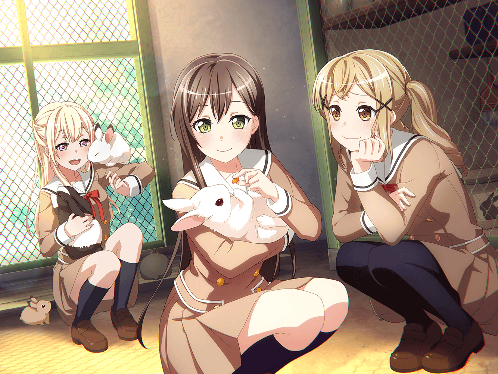

公園
有咲
ん～～～……！
有咲
いや～、今日はいい天気だな～
たえ
そうだね
有咲
青い空、白い雲……
これぞ散歩日和ってやつだな
たえ
なんだか歌の歌詞みたいだね
有咲
ん？ そうか？？
そんなつもりはなかったけど……
たえ
あ。あの雲……
有咲
……雲？
どれのこと言ってるんだ？
たえ
有咲の真正面に……ほら
たえ
あれ、うさぎみたいな形だね
有咲
あー……確かに、言われてみれば……
イヴ
忍っ！
タエさんとアリサさんじゃないですか！
有咲
うおっ！？
たえ
あ、イヴだ
有咲
い、いきなり背後から現れんなよ！
びっくりするだろっ
イヴ
フッフッフッフ……
イヴ忍（にん）でござるですよ！
有咲
い、イヴ忍（にん）？
なんだよ、それ……
イヴ
お二人は何をされてるんですか？
お散歩ですか？？
たえ
有咲のお散歩だよ
有咲
オイ！ 私は犬か！
たえ
あ、ごめん。
「有咲と」だった
有咲
そこを間違えんなよ……
たえ
わかった。
次からは気をつけるね
たえ
それでイヴ。
この間はありがとう
イヴ
はい？
この間、ですか？？
たえ
うさぎ、一緒に追いかけてくれたから
イヴ
あー！ 先日の！
どういたしまして！
イヴ
困ったときはお互い様、
旅は道連れ世は情けです！
イヴ
あのウサギさん達、
とってもふわふわしていて可愛かったですね！
たえ
うん。ふわふわ、ぽかぽかだった。
また触りたいな
有咲
そういえばあの時のおたえは、
いつも以上にニコニコしてたよな
有咲
まあ、確かにうさぎはぬくぬくで、
ふわふわしていたから、気持ちはわかるけど
有咲
……だからって、また追いかけまわすのはごめんだけどな
たえ
あの時は、
みんなで追いかけたから捕まえられた
たえ
一致団結っていいよね。
有咲も手伝ってくれてありがとう
有咲
べ、別に……
あの時はみんなが手伝うっていうから仕方なく……
有咲
す、好きで追いかけたんじゃないし？
イヴ
ふふ、アリサさんは素直じゃありませんね
有咲
なっ！？
たえ
有咲、顔が真っ赤だよ？
太陽の光、浴びすぎた？？
有咲
ち、違ぇよ！
なんでもないし……！
イヴ
あ、そうだ！
今度みなさんで動物園に行きましょう！
有咲
いきなりの提案だな
イヴ
いろんな動物がたくさんいます！
きっと楽しくなりますよ！
たえ
動物園……
たえ
クマとかパンダとか、あとグリズリー
有咲
全部クマだろ……
たえ
うさぎもいるのかな？
イヴ
きっといますよ！
たえ
そっか。
行きたいな……香澄と、沙綾、りみも一緒に
たえ
有咲も来る？
有咲
う……そ、そこまで言われたら断れるわけないだろ……
たえ
じゃあ決まりだね。
一緒に行こうね、イヴ
イヴ
はい！ チサトさん達も呼びましょう〜
きっと楽しい一日になりますね！
たえ
楽しみだなぁ
たえ
動物園って、マスコットとかいるのかな
イヴ
どうでしょう？
着ぐるみさんならいるんじゃないでしょうか？
たえ
着ぐるみ……あ、そうだ
たえ
うさぎの衣装の話、どうなったの？
みんなで着るんだよね、有咲？
有咲
あれマジで言ってたのかよ！？
たえ
着ないの？ 『不思議の国の有咲』
有咲
か、勘弁してくれよぉ……